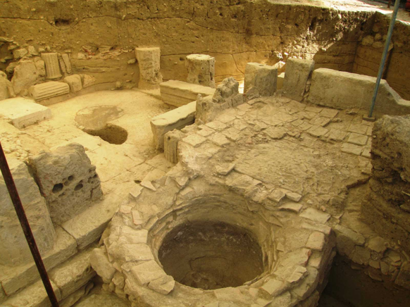

How the Data Are Organized
Each record combines a name, period, type, short description, and a fixed geospatial location. Periods determine the marker’s color; types determine the symbol. This keeps the legend stable and legible across zoom scales while allowing the expanded master dataset to remain searchable and reusable.
Periods (marker color)
- Prehistoric
- Classical–Hellenistic–Roman
- Byzantine–Medieval–Ottoman
- Modern / Ethnographic
- Textual testimony
Types (marker symbol)
- ● Archaeological site
- ■ Storage / installation (pithoi, linos, vats)
- ◆ Vineyard / production area
- ▲ Trade / monastic / port
- ✦ Literary reference
- ◇ Ethnographic / traditional practice
Geocoding & Interaction
Locations are stored as fixed WGS84 coordinates to improve performance and reliability. The map uses custom inline SVG icons, accessible popups with title, subtitle, description, evidence and references, and a dark-theme Leaflet popup style for print and screen legibility.
Abstract
The Peloponnese preserves one of the most continuous landscapes of viticulture in the Mediterranean, where archaeological, archaeobotanical, and historical evidence trace wine production from the Early Bronze Age to modern appellations. Archaeobotanical analyses have revealed carbonized grape remains and pips in settlement contexts from Lerna, Tiryns, and Asea, demonstrating the incipient domestication and processing of Vitis vinifera by the 3rd millennium BCE.
Complementary archaeometric studies on pithoi and organic residues further confirm fermentation activity and wine-related residue signatures in ceramic assemblages across the northeastern Peloponnese. [1]
Regional archaeological surveys such as the Nemea Valley Archaeological Project (NVAP) have mapped the evolving relationship between settlement systems, terraced slopes, and vineyard microzones from the Bronze Age through the Classical period. These datasets illustrate how viticulture shaped and responded to the geomorphology, hydrology, and transport routes of central Peloponnesian valleys.
From the medieval period onward, the Monemvasia–Malvasia relationship provides an exemplary case of the transformation of local viticulture into a trans-Mediterranean commodity; genetic and historical work traces the linguistic and varietal lineage of Malvasia wines back to the fortified port of Monemvasia. This continuity is mirrored in later records of Mantineia and Nemea, today designated as PDO regions. [2–3]
The present project integrates these data into a digital interactive map built with LeafletJS, linking excavation reports, archaeobotanical datasets, and current vineyard distributions. The accompanying HTML narrative situates each site within its chronological and cultural context, illustrating how geography, climate, and human craft have co-produced the Peloponnesian wine landscape over five millennia.
By combining archaeology, archaeometry, and digital humanities, this work offers a spatial storytelling framework for interpreting the heritage of wine in southern Greece. [4]
Periods & Evidence
Prehistoric (Neolithic–Bronze Age): Vitis pips & charcoal
- Franchthi (Early/Middle Neolithic); Drakaina (Late Neolithic); Tiryns & Lerna (Early Bronze Age); Argos/Aspis (Middle Bronze Age); Midea (Late Bronze Age); Tsoungiza & Ayia Sotiria (EB/LH III); Kouphovouno & Nichoria (Middle Bronze Age); Romanos P.O.T.A.; Palace of Nestor (storerooms with 35 pithoi and 40 sealings, four with the wine ideogram); Kassaneva; Mycenae (amphorae with wine, resin, rue, honey). [1]
Classical–Hellenistic–Roman–Late Roman
- Mount Taygetos (Dentheliatis wine area; Platana–Koutsavitiko); Ancient Messene (grape pips; Roman villa linos); Ancient Thouria (late antique linos with hydraulic plaster and outflow). Nemea/Phlious (Phliasian wine; expansion with Nemean Games from 573 BCE).
- Production/press installations across Exo Agyia & Patras (rural villas), Ancient Corinth, Derveni, Berbati, Elliniko “Pyramid,” Doroufi (Kranidi), Lousoi (Kalavryta), Veligosti (Megalopolis), Kalliani (Tropaia), Manari (Asea), Figaleia, Sparta–Karavas (km 0+700), Kokkiniko Magoula (near Sparta acropolis), Parori (W of Sparta), Mavrovouni (Gytheio), and early Byzantine Olympia.

Byzantine–Medieval–Ottoman
- Ancient Thouria (Theater linos, 12th–15th c.); Monemvasia — first attested 1214 by Nikolaos Mesarites (Malvasia wine at the imperial table); Methoni — Vin San Leo (Paleomethone) with Cistercian nuns before 1267; Methoni — Muscat and “Romanian wines” noted by travelers.
Ancient Written Testimony
- Homer, Iliad IX 153–155: Arcadia as “vine‑clad”. Pausanias, Description of Greece (2 & 8): wines of Mantineia; vineyards of Nemea/Argolid; Dionysos in Phlious. Aristotle (via Theophrastus), De Plantis: terroir differences. Theophrastus, Causes of Plants V.3.7: regional vine varieties.